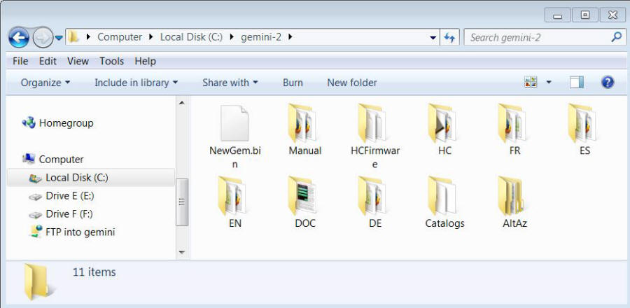
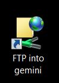
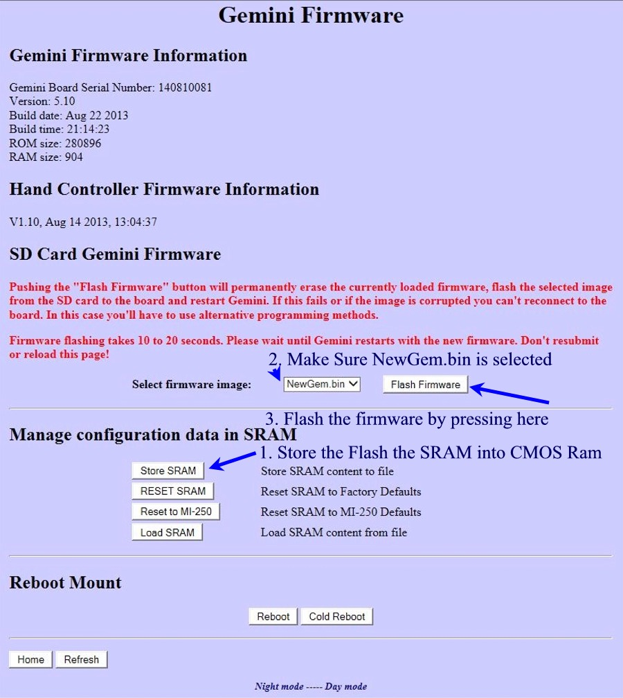
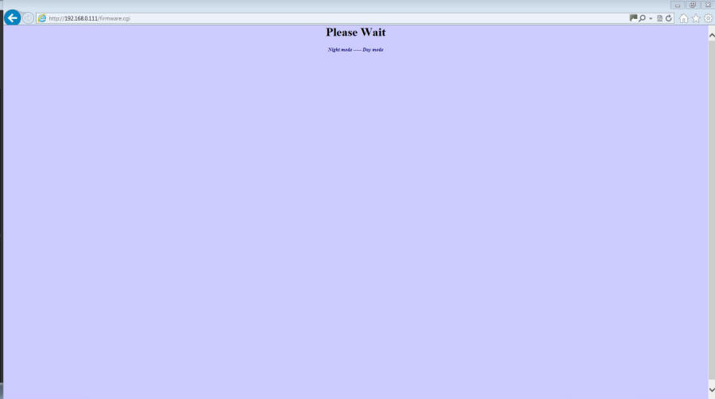
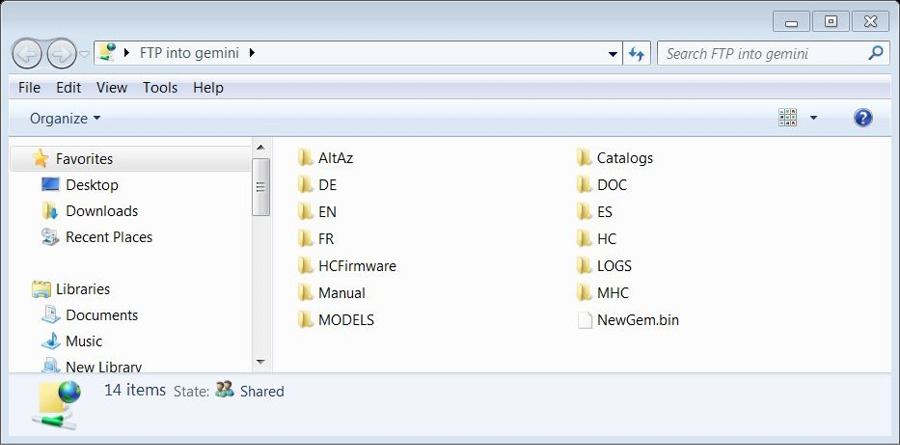
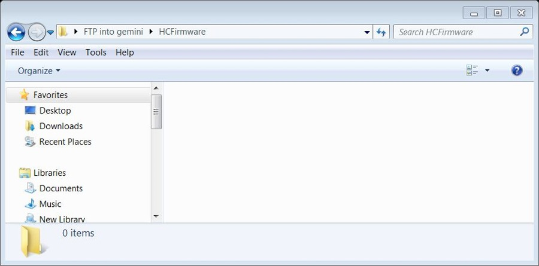
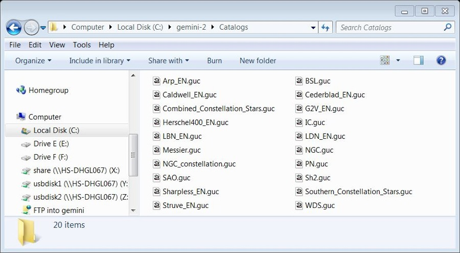

Fig 1
|
Gemini 2 Combined Main Unit and Hand Controller Firmware Update |
Now updating this firmware yourself will be at your own risk, and Hollywood General Machining, Inc. (Losmandy) or any one associated with them, or anyone associated with http://www.gemini-2.com will and can not be held liable if anything goes wrong. YOU DO THIS AT YOUR OWN RISK. I suggest that you contact Losmandy at (323) 462-2855 or Scott@Losmandy.com or Russell@Losmandy.com and get there permission to do this update. That way you are covered if anything goes wrong. I have provided the best instructions that I can, but there is absolutely no guarantee, that everything will work as expected. If you do intend to do this upgrade, please read all the instructions first, and make sure you completely understand them. I can sometimes provide help using Teamviewer (if you are in the USA or Canada), but even If I do that, you understand and acknowledge that doing so is completely AT YOUR OWN RISK. The only way for this to be not at your own risk is get permission from Losmandy to do the update. So please get the permission first, preferably via Email, so you have it in writing. I would also like to see that email before I attempt helping you. Or an email from you dissolving me of any liability if anything goes wrong. I do this using my time, and do not charge for it, so I don't think that is too much to ask. |
|
This general guide will help you update the firmware in your Gemini 2 main unit and hand controller using Windows File Explorer. This instructions uses the windows file explorer to do the upgrade. I am going to suggest that you add the Gemini-2 as a network place in your computer. Then you can copy that network place and place it as a shortcut on your desktop. Here is a link on how to do that, After you do that, come back here and complete this instructions to complete the upgrade. You will also need to know how to unzip a zip file. Most Windows Operating Systems let you do this by right mouse clicking on a file and selecting un-pack or unzip. I like the utility 7ZIP and highly recommend it for Windows. There are also alternate instructions provided to creating an FTP link on your desktop. See the paragraph below step 5, for the alternate instructions. |
|
Please read all the steps before starting. If something is not clear don't do these steps, Ask for help on the Gemini-II users group If you need help. |
|
If you have not already connected to the Gemini 2 via Ethernet and need instructions click here |
|
If you do not have the motors connected, then the Gemini will
emit a beep about every 15 seconds telling you a motor is
stalled. This will not hurt anything. The Gemini 2 is fine without the motors connected.
You can use the hand controller and put the tracking mode into
terrestrial mode, using "menu-->Track-->Terrestrial". We are going to perform the following steps:
I also created a Flash Version movie that use Windows Explorer as an FTP client. 1. We need to disconnect the hand controller. If you don't like connecting and disconnecting the hand controller with power on, you can power off the Gemini-2, disconnect the Hand controller, and then Power ON the Gemini. However it really does not hurt to just disconnect the hand controller, so please use either method to disconnect the hand controller now. If you powered down to disconnect the hand controller please make sure you can still connect to the Gemini 2 (See above) 2. Download the specially created file combined.zip to a empty directory on your hard drive. This zip file contains all the files to update both the Main Gemini Unit and hand controller. |
| Here is an example of what it should look like after downloading. |
|
Fig 1 |
| 3. Unzip the downloaded combined.zip file and extract the all the contents to your selected directory and save it on your computer. Remember the folder where you save it since you will need it later. I put mine on drive C: and named it Gemini-2. I am using Windows 7. Here is what mine looks like unzipped. |
|
 Fig 2 |
| Now please delete the file combined.zip. (this has already been done it figure 2. This will leave the files that we are going to put onto the micro-SDcard of the main Gemini-2 unit. Fig 2 shows what you should have left. |
|
5.
We will soon use the new FTP into Gemini Icon we created on out
desktop. but first highlight all the directories and files shown in
Fig 2 and right mouse click and select copy. Use either the FTP into Gemini link if you created one on your desktop, or the instructions below. |
|
 Fig 4 |
Now if you did not do the FTP into Gemini icon on your desktop, you can always open a second File Explorer
window and in the address bar type ftp://admin@Gemini or
if your Gemini-2's IP address is 192.168.0.111 then type ftp://admin@192.168.0.111 as an example, but use the IP address shown in your hand controller.
Here is a link to what it looks like in both Win 7 and XP Command K will open an FTP in the MAC OS-10 environment. |
| 6. Now right mouse click on the FTP Icon on YOUR desktop and select Paste. You should get a message asking you to confirm the copy. Please click YES TO ALL. It should now look like image 6. If you did not create the FTP into Gemini Icon, then right mouse click in the new File explorer window and select paste. |
 Fig 6 - Select Yes to ALL |
| 7. After all the files are copied we will use the web interface to flash the NewGemi.bin file. |
8. Open up your favorite Web browser. In the address bar put in http://gemini or http://192.168.0.111 or the IP address of your Gemini-2. You can find this on the hand controller under Menu-->Mount-->Network. |
 Fig 7 |
9. Enter admin in the user block 10. Leave password box empty 11. Hit OK Please note that Google Chrome has a pop-up blocker that can stop the popups from the Gemini-2 from showing up, and prevent this menu. |
|
Fig 8 |
12. Select the Firmware/SRAM Tab. |
 Fig. 9 |
13. a. Press the Store SRAM - to store the SRAM contents into the Micro-SDcard for later retrieval. b. Make sure that the box to the right of the "Select Firmware Image" and has NewGem.bin in it. c. Then Push on the Flash Firmware tab in the on your Gemini-2 as illustrated above in Fig 9. This will flash the current program into the ARM processor inside the Gemini-2. The screen will change to Fig 12 below. Please note that Google Chrome has a pop-up blocker that can stop the popups from the Gemini-2 from showing up. Popups are required for the Flash Firmware function to function. |
|

Fig 10. |
14. The screen should stay like this for about 30 seconds or so. and then come back to Fig 9. If it does not, that means that you are probably using an IPaddress other than HTTP://192.168.0.111. If it does not come back try putting in Http://Gemini and see if it comes back. If it does not then you will have to go to troubleshooting connection problems. If you have to do that please look at Menu-->Mount-->network, and write down the setting. Then un-plug the hand controller, and proceed to troubling Connections. |
 Fig 11 Note: The build date for Gemini Firmware should be OCt 25,2013 |
As shown in fig 11 above, be sure to hit the Reset SRAM button for the type of mount you have. Then use the Load SRAM button after you have reset the mount to the proper mount type. This should set your mount type, site, and or limits back to what you had them at before the upgrade. But always check them to make sure. |
15. The Hand controller takes a long time to upload all the catalogs. Because of this, and that it has sometimes locked up the hand controller, uploading the catalogs are now an separate step. |
| 16. Now plug the hand controller back into the SERIAL PORT 2, GRAPHICS HC jack |
|
17. You should see a screen like the one on the below. It shows that the hand controller firmware is being uploaded to the hand controller micro SDcard. If this does not happen try powering Gemini off and on again. 
|
18. When this screen on the left is done, it usually takes about 5 minutes are so, then the flashing screen will appear.  Figs 12A and 12B |
|
19. Note that the button *.c16 files will now upload. When they are all finished uploading, the the hand controller should start over and you will see the logo screen, the CALIBRATION prompt screen and finally the main menu screen. PLEASE make sure you do the Calibration of the Touch Screen. You are done when that happens. |
|
20. After the Gemini hand controller has flashed its new firmware the HCFirmware directory in the main unit should be empty and the hand controller should have the new firmware loaded. Note that the button files will automatically also load. These are files ending in .c16 Note that none of the catalog files have been uploaded to the hand controller. We will do that next. |
|
Fig 13 |
|
21. Now double click on the FTP into Gemini Icon you put on your
desktop, or open a Windows File explorer window and put in FTP://admin@your
Gemini-2 IP address. (example: ftp://admin@192.168.0.111) You
should see a window similar to figure 14 below. I have small Icons
selected. |
|
 Fig 16 |
|
27. Now double click
on the HChandcontroller directory. It should look like below. |
|
 Fig 17 |
| 28. Notice that there are no catalog file shown in the HCFirmware directory. We are now going to select the catalogs from the Catalogs directory that you previously downloaded and stored on your hard drive. So Open up that directory. |
|
Fig 18 |
| 29. Now double click on the Catalogs directory. The window should change to what you see below in fig 19. |
|
 Fig 19 |
| 30. You do this by right mouse clicking on each catalog you want and selecting copy, or you can select the catalogs and then right click and select copy in Fig 19. The choice is yours. Now you go to open like figure 17 above and select paste. Now if you want all the catalogs, I would do them several at a time, not all at once, as the hand controller has known to lock up with such massive uploads. Just repeat steps 30 and 31 for each set of catalogs you want. You can tell when they have uploaded, because they will disappear from the HCFirmware menu of Fig 19. See fig 20 for both menus show one on top of the other. I have copied 3 catalogs as an example. |
| 31. Now once you have the catalogs you want, you can either turn off the Gemini-2 and turn it back on, or just unplug the hand controller and plug it back in. I would suggest the latter since you would not loose the FTP connection that you established in step 21 above. This is especially true if you are going to steps 30 and 31 over until you have all the catalogs uploaded. Either method should cause the hand controller to upload the catalogs. |
 Fig 20 |
| After you have uploaded everything to the hand controller, make sure you calibrate the screen. This is very important after a firmware update. |
| Please make sure that the updates take by going to the menus on the hand controller or the Web interface
that tells you the firmware installed. On the hand controller go to MENU-->HC-->INFO On the Web interface go to Firmware/SRAM. You will have to do a cold start, warm start, or warm restart for this page to show the Hand controller firmware version. |
{kind=link}